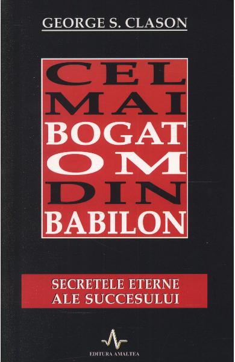

Cel mai bogat om din Babilon scrisa de: George S. Closon
Descriere: Milioane de cititori au ajuns sa cunoasca celebrele „parabole babiloniene“ ale lui George S. Clason.https://images.gr-assets.com/authors/1453455124p5/688.jpg Considerate a fi adevarate surse de inspiratie, ce trateaza atatea subiecte dureros de actuale precum planificarea si obtinerea succesului financiar, asigurarea unui venit solid pentru viitor, dar si principii financiare extrem de solide, desi vechi de mii de ani, aceste povestiri fascinante, bogate in sfaturi si informatii extrem de utile, au devenit un model demn de urmat pentru toti autorii lumii moderne ce hotarasc sa scrie despre toate aceste teme. Pentru cei care au citit Arta Vanzarii de Zig Ziglar, numele lui George S. Clason nu este o necunoscuta, iar cartea de fata vine dupa o indelunga asteptare. Paginile ei va vor purta doar aparent inapoi in timp, tocmai in indepartatulBabilon, leaganul principiilor de baza ale lumii financiare, pretuite si in zilele noastre si puse in practica in intreaga lume.

Curajul de a nu fi pe placul celorlalti |
scrisa de: Ichiro Kishimi,Fumitake Koga |
Cele 5 limbaje ale iubirii |
scrisa de: Gary Chapman |
Arta subtila a nepasarii |
scrisa de: Mark Manson |
Daca doriti sa aflati mai multe lucruri despre carti de dezvoltare persoanala, puteti sa va faceti un cont Site Mai multe informatii despre noi gasiti la adresa Adresa
Top 10 cele mai bune cărți de dezvoltare personală:
Începe cu ce nu îți place - autor: Brian TracyLider fără funcție - autor: Robin SharmaDe la bine la excelent - autor: Zig ZiglarDincolo de vârf - autor: Zig ZiglarCum să comunici eficient - autor: Dale Carnegie Atomic Habits - autor: James ClearÎnvață să spui Nu! - autor: France BrecardEl câștigă,ea câștigă - autor: Willard F. Harley JrNu te lăsa manipulat - autor: Maria-Dolores Sanchez Ești ceea ce gândești - autor: Dr. Wayne W. Dyer<carti>{kind=link}